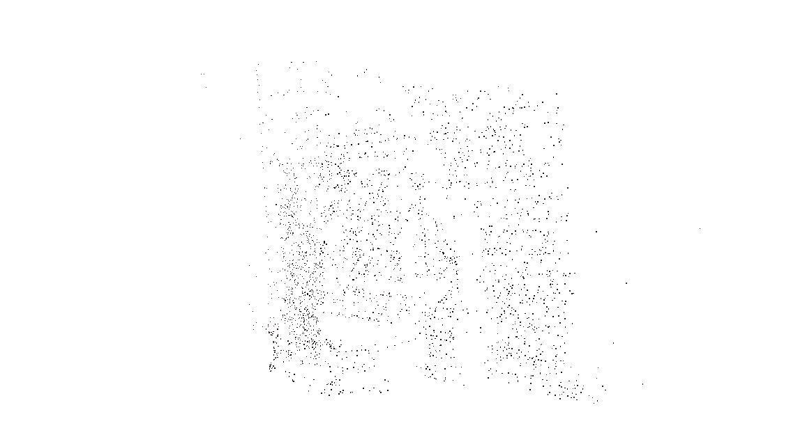

Assignment 3
Overview
Here is the checklist for the assignment:
- Complete the training using your own data. ✔
- Write up your project, algorithms, reporting results and visualisations, compare your reconstruction with open source software Colmap. ✔
- Extra credit: Present results with your own captured data. ✔
- Extra credit: Train your models with both Nerf and 3DGS. ✔
There are more results could be found in folder: assets/assignment3.
Algorithm and Implementation
NeRF
The implementation I used could be found in the following link: NeRF
I used the following steps to train the model with my own data:
- Use FFmpeg and Colmap to preprocess and doing SfM from the captured video.
- Inputs multiple 2D images of a scene with known camera positions.
- Train the model mapping 3D coordinates and viewing directions to color and density.
- Optimizes the neural network by minimizing the difference between rendered and actual images.
- Uses differentiable volume rendering to simulate light accumulation and render images from any viewpoint.
3DGS
The implementation I used could be found in the following link: 3DGS
I used the following steps to train the model with my own data:
- Use FFmpeg and Colmap to preprocess and doing SfM from the captured video.
- Generates a set of 3D Gaussians from the SfM points, providing a smooth representation.
- Optimizes and adaptively adjusts the density of the 3D Gaussians to capture the scene accurately.
- After training, use fast differentiable rasterizer for rendering Gaussians.
Results and Comparsion
I compare the result between 3DGS, NeRF and Colmap with my own captured scene. I used a 15 seconds videos the input data for the training.
Here is the video:
Colmap
Mean Reprojection Error = 0.5122 [t=5.8s]
NeRF
Mean Reprojection Error = 0.4278 [t=3.3s]

3DGS
Mean Reprojection Error = 0.4278 [t=3.3s]
Showcases
Fountain-P11 Point Cloud Viewer
Fountain-P11 Reprojection Error Images
Mean Reprojection Error = 0.5122 [t=5.8s]
Herz-Jesus-P8 Point Cloud Viewer
Herz-Jesus-P8 Images
Mean Reprojection Error = 1.086 [t=3.0s]